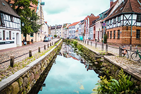
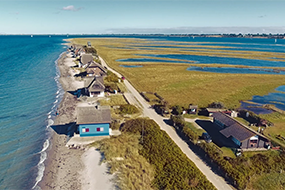

Lassen Sich dich inspirieren!



Wismar: Ein beliebtes Ausflugsziel für Kulturfans
Wer Lust auf einen kleinen historischen Kulturtrip an der Ostsee hat, sollte auf jeden Fall Wismar besuchen. Die Hansestadt liegt an der Spitze der Wismarer Bucht und ist von Hamburg aus in einer knappen anderthalbstündigen Autofahrt zu erreichen. Besonders die Wismarer Altstadt lockt viele Besuchende an. mehr
Heiligenhafen: Erlebnisparadies für die ganze Familie
Wahrzeichen und ein beliebtes Ausflugsziel an der Ostsee ist das Leuchtfeuer Heiligenhafen. Hierbei handelt es sich um einen Leuchtturm, der durch sein feuerrotes Laternenhaus besticht. mehr